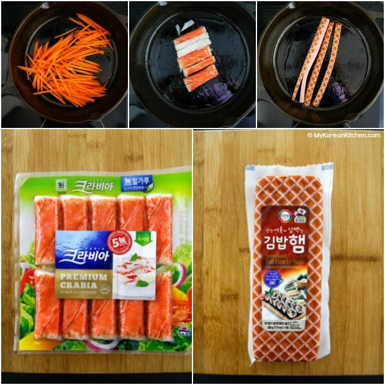

Kimbap

Description
Gimbap (김밥), also romanized as kimbap, is a Korean dish made from
cooked rice and ingredients such as vegetables, fish, and meats that
are rolled in gim—dried sheets of seaweed—and served
in bite-sized slices.
- 4 dried seaweed sheets
- 120g / 4.2 ounces spinach (regular or baby spinach)
- 2 eggs, beaten
- Rinse the spinach and parboil it in rapidly boiling water (30 seconds to 1 minute). Drain the water away and run some cold water over the spinach. Gently squeeze the spinach to remove any excess water. Put the spinach into a bowl. Add 1/8 tsp salt and 1/2 Tbsp sesame oil then mix them well.
- Pre-heat a pan/skillet. Add a small dash of cooking oil and spread it around the pan. Add the beaten egg and cook both sides well over medium heat. Place the egg omelette on a cutting board and cut it into long strips.

- In a heated pan, lightly cook the carrots, crab sticks and kimbap ham (about 1 min per ingredients), separately, and over medium heat. (Some people use these raw, but I prefer cooking them first for my kimbap.)